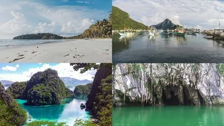

History
Palawan, Philippines, holds a storied history, shaped by a tapestry of indigenous cultures and colonial influences. Long before Spanish colonization, the island was inhabited by various indigenous groups, including the Tagbanwa, Palaw'an, and Batak peoples. The arrival of Spanish explorers in the 16th century marked the beginning of European influence, leading to the establishment of settlements and the introduction of Christianity. Throughout the Spanish colonial period, Palawan remained relatively isolated, with sporadic interactions with colonial authorities. In the late 19th century, Palawan became part of the American-controlled Philippines, further shaping its socio-political landscape. World War II brought significant upheaval to the region, with Palawan serving as a strategic location in the Pacific theater. In the post-war era, Palawan saw continued development and integration into the broader Filipino nation, while efforts to preserve its indigenous heritage and natural environment remain ongoing.
Geography
Palawan, located in the western part of the Philippines, is an archipelagic province renowned for its stunning geography. It encompasses the main island of Palawan along with approximately 1,780 smaller islands and islets, each contributing to the province's diverse landscape. Bordered by the South China Sea to the west and the Sulu Sea to the east, Palawan boasts a coastline of over 2,000 kilometers, adorned with pristine beaches, rugged cliffs, and turquoise waters. The province's interior is characterized by lush forests, mountain ranges, and limestone karst formations, including the world-famous Puerto Princesa Underground River. Palawan's rich biodiversity extends from its terrestrial ecosystems to its vibrant coral reefs, making it a haven for nature lovers and adventurers alike. With its breathtaking scenery and ecological treasures, Palawan stands as a testament to the natural wonders of the Philippines.
Demographics
The province is home to a diverse population composed of indigenous groups, settlers from other parts of the Philippines, and migrants from various countries. Among the indigenous communities are the Tagbanwa, Palaw'an, and Batak peoples, each with their distinct languages, traditions, and ways of life. These indigenous groups have deep-rooted connections to the land and sea, preserving traditional practices and knowledge passed down through generations. In addition to indigenous communities, Palawan's population includes migrants from Luzon, Visayas, and other regions attracted by economic opportunities and the province's natural beauty. The influx of settlers has contributed to cultural diversity and the dynamic social fabric of Palawan. Moreover, Palawan's strategic location in the western Philippines has made it a melting pot of cultures, with influences from Spanish colonialism, American colonization, and interactions with neighboring Southeast Asian nations. Overall, Palawan's demographics paint a picture of a vibrant and multicultural society, where various ethnic groups coexist, enriching the province's cultural landscape.
Economy
Palawan's economy is characterized by a diverse mix of industries, with agriculture, fisheries, and tourism standing out as primary drivers of growth. The fertile lands of Palawan support agricultural activities, with rice, coconut, and cashew nuts among the key crops cultivated by local farmers. The province's extensive coastline and rich marine resources also contribute significantly to its economy, with fishing providing livelihoods for many coastal communities. In recent years, tourism has emerged as a major economic engine for Palawan, fueled by its stunning natural beauty and diverse attractions. Popular destinations such as El Nido, Coron, and Puerto Princesa draw millions of visitors annually, seeking pristine beaches, crystal-clear waters, and opportunities for adventure and relaxation. The tourism industry has spurred investment in hospitality infrastructure, including hotels, resorts, and eco-lodges, creating employment opportunities and driving economic growth across the province. However, sustainable management of tourism development remains a priority to preserve Palawan's fragile ecosystems and cultural heritage for future generations.

Tourism
Palawan's tourism sector stands as a vibrant pillar of its economy, drawing visitors from around the globe to its pristine shores and breathtaking landscapes. Renowned for its crystal-clear waters, white sandy beaches, and rich marine biodiversity, Palawan offers a paradise for nature lovers and adventure seekers alike. Destinations such as El Nido, Coron, and Puerto Princesa enchant travelers with their stunning limestone cliffs, hidden lagoons, and vibrant coral reefs, inviting exploration through island hopping, snorkeling, diving, and eco-tours. The province's commitment to sustainable tourism practices ensures the preservation of its natural wonders and cultural heritage while fostering responsible travel experiences. Community-based tourism initiatives empower local communities to share their traditions, crafts, and cuisine with visitors, promoting cultural exchange and economic empowerment. Furthermore, efforts to protect marine sanctuaries and promote environmental conservation underscore Palawan's dedication to preserving its ecological treasures for future generations. With its unparalleled beauty and commitment to sustainability, Palawan continues to captivate the hearts of travelers, earning its place as one of the world's most coveted destinations.
Attractions
Palawan's allure as a tourist destination lies in its captivating natural attractions, each offering a unique and unforgettable experience. The Puerto Princesa Subterranean River National Park stands as a testament to the province's natural wonders, with its mesmerizing underground river winding through intricate limestone caves. This UNESCO World Heritage Site beckons adventurers to explore its mystical depths, unveiling the beauty of nature's hidden treasures. Beyond its subterranean marvels, Palawan enchants visitors with its pristine island paradises. El Nido and Coron boast crystalline waters, towering limestone cliffs, and secluded beaches, providing an idyllic backdrop for island hopping, snorkeling, and beachcombing adventures. Whether exploring vibrant coral reefs teeming with marine life or relaxing on sun-kissed shores, Palawan's attractions promise moments of wonder and tranquility amidst nature's splendor.
Schools and Universities
Palawan's educational landscape is anchored by institutions like the Palawan State University (PSU) and the Western Philippines University (WPU), which offer a diverse array of academic programs to students across the province. PSU, as the largest state university, provides accessible higher education opportunities through its campuses strategically located in different areas of Palawan. Its comprehensive curriculum spans various disciplines, empowering students to pursue their academic and career aspirations. Complementing the state universities are private colleges and vocational schools that cater to specialized fields such as tourism, hospitality, and healthcare. These institutions play a vital role in meeting the specific educational needs of Palawan's workforce, equipping students with practical skills and knowledge relevant to the province's growing industries. Together, these educational establishments contribute to the intellectual and socio-economic development of Palawan, nurturing a skilled workforce and fostering innovation and progress in the region.